<!DOCTYPE html>
<html lang="en">

<head>
    <meta charset="UTF-8">
    <meta name="viewport" content="width=device-width, initial-scale=1.0">
    <meta http-equiv="X-UA-Compatible" content="ie=edge">
    <title>인공지능 concept</title>

    <link rel="stylesheet" href="https://cdnjs.cloudflare.com/ajax/libs/meyer-reset/2.0/reset.css">
    <link rel="stylesheet" href="../../design-control/css/tamplet.css">


    <style>
        .first_title>li {
            font-size: 14px;
        }

        .second_title>li {
            font-size: 12px;
            text-indent: 5px;
            font-weight: bold;
        }

        .third_title>li {
            font-size: 10px;
            text-indent: 10px;
        }

        .fourth_title>li {
            font-size: 8px;
            text-indent: 15px;
        }

        .fifth {
            font-size: 8px;
            margin-left: 20px;
        }

        .extra_small{
            margin: 0;
            width: 100px;
        }

        .small{
            margin: 0;
            width: 200px;
        }

        .medium{
            margin: 0;
            width: 400px;
        }

        .large{
            margin: 0;
            width: 600px;
        }
        .huge{
            margin:0;
            width: 1000px;
        }

    </style>
    <script src="https://ajax.googleapis.com/ajax/libs/jquery/3.4.1/jquery.min.js"></script>
    <script type="text/javascript" src="../../design-control/javascript/iandcomputer.js"></script>

    <script src="https://polyfill.io/v3/polyfill.min.js?features=es6"></script>
    <script id="MathJax-script" async
            src="https://cdn.jsdelivr.net/npm/mathjax@3/es5/tex-mml-chtml.js">
    </script>
    <script type="text/x-mathjax-config"> MathJax.Hub.Config({ TeX: { extensions: ["color.js"] }}); </script>
    <script type="text/x-mathjax-config"> MathJax.Hub.Config({ TeX: { extensions: ["cancel.js"] }}); </script>


</head>

<body>
</body>

</html>

<!DOCTYPE html>
<html>

<head>
    <meta charset="utf-8">
    <title></title>
</head>

<body>
    <div class="container">
        <header>
            <h1>인공지능 concept</h1>(<a href="./practice.html">인공지능 practice</a>)
        </header>
        <section class="content">
            <nav>
                <div>
                    <ul class="first_title">
                        <li class="first_title">들어가기</li>
                        <li class="first_title">Ⅰ. supervised learning</li>
                        <ul class="second_title">
                            <li>0. 본질</li>
                            <li class="second_title">1. linear regression #특정값을 예측</li>
                            <ul class="third_title">
                                <li>linear regression with one variable</li>
                                <li>linear regression with multiple variables</li>
                                <li>polynomial regression</li>
                            </ul>
                            <li class="second_title">2. logistic regression #classification #판단</li>
                            <ul class="third_title">
                                <li>logistic regression with one variable</li>
                                <li>logistic regression with multiple variables</li>
                            </ul>
                            <li class="second_title">*overfitting이라는 문제, regularization으로 해결</li>
                            <ul class="third_title">
                                <li>overfitting</li>
                                <li>regularization</li>
                            </ul>
                        </ul>
                        <br>
                        <li class="first_title">Ⅱ. unsupervised learning</li>
                        <br>
                        <li class="first_title">Ⅲ. reinforcement learning</li>
    
    
                    </ul>
                </div>

            </nav>
            <main>


                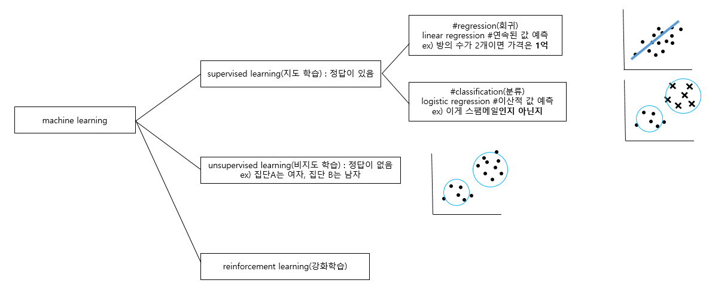
                <p>
                    regression(회귀)라는 개념 안에는 이미 '연속되는' 데이터라는 의미가 내포되어 있다.<br>
                    그런데도 classification(분류)에 logistic 'regression'이라는 hypothesis를 쓰는 이유는 <br>
                    logistic regression의 개념이 linear regression에서 출발했고, 
                    logistic regression 그래프 자체는 연속적인 그래프이기 때문이다.
                    단지 분류가 가능하도록 그래프의 값이 0, 1을 가지는 함수를 억지로 만들어낸 것이다.
                </p>

                <h1>Ⅰ. supervised learning</h1>
                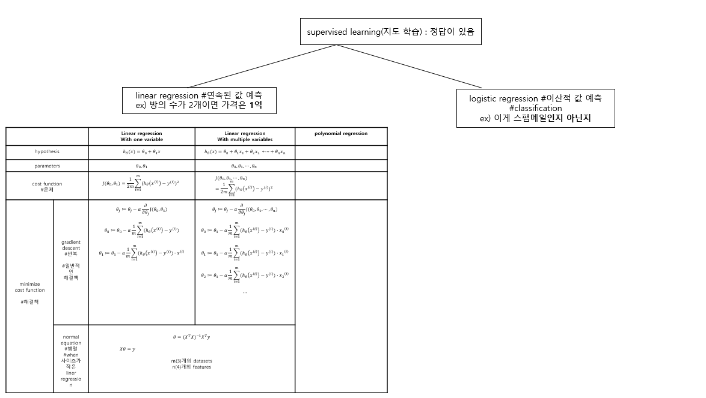
                <h2>0. 본질</h2>
                <p>
                    supervised learning은 <strong>답이 있는</strong> 데이터를 이리저리 살펴보면서
                    새로운 입력값이 들어왔을 때 누가 더 정확하게 결과값을 예측할 수 있느냐의 싸움이다.
                    그러기 위해선 산업, 분야의 통계자료를 꿰뚫는 함수식을 만들어내야하는데
                    그 함수식을 찾는 것이 인공지능의 본질이다. 함수식을 찾는 방법은 3단계로 이루어진다.
                </p>
                <h3>step1. hypothesis 세우기</h3>
                <p>
                    데이터들의 분포를 가장 잘 설명하는 함수의 형태를 정하는 것이다.
                    인공지능은 우리가 초중고 시절에 배운 수학을 거꾸로 적용하는 것이다.
                    우리는 함수식이 주어지면 그 함수식에 대입하는 입력값이 변수였다.
                    하지만 인공지능에서는 입력값과 출력값이 수많은 데이터에 나와있고 이들의 관계를 가장 잘 설명하는 함수를 찾아내는 것이다.
                    그래서 우리는 함수의 변수를 학창시절엔 항상 상수로 주어졌던 기울기나 y절편 같은 것을 변수로 설정한다.
                    그리고 그 변수를 찾아내는 과정이 인공지능이 하는 일이다.
                </p>
                <h3>step2. cost function 구하기</h3>
                <p>
                    실제 데이터의 결과값과 내가 세운 함수의 입력값에 대한 결과값을 비교한다.
                    그 차이를 수식으로 나타낸 것이 cost function이다.<br>

                    방법은 여러가지가 있다. <br>
                    linear regression에 사용되는 squared error 방식(차이를 구하고 제곱하고, 2로 나누는 것)도 있고
                </p>
                <h3>step3. cost function을 최소화하는 조건 찾아내기</h3>
                <p>
                    그렇게 cost function을 최소화하는 변수θ를 찾아내면 끝이다.
                </p>

                <hr>

                <div style="background-color: #f2f2f2;">
                    <h2>1.1 linear regression 이론</h2>
                    <p>
                        linear regression은 우리에게 가장 익숙한 함수이다.
                        우유를 얼마나 마시면 키가 얼만큼 클지,
                        운동을 몇 시간 하면 근육은 얼마나 생기는지,
                        평수가 넓어지면 집값은 얼마나 오르는지
                        일련의 연속적인 데이터를 가지고 결과값이 수치상으로 나타나는 것이다.
                    </p>
                    <div style="display: flex;">
                        <div style="border-right: 1px solid black;">
                            <h3>linear regression with one variable</h3>
                            <p>
                                변수가 1개인 것이다. 그래서 변하는 조건인 x가 1개이다.
                            </p>
                            <h4>step1. hypothesis</h4>
                            <p>
                                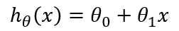
                                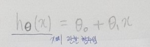
                                <br><br><br><br><br><br><br><br><br><br><br><br><br><br><br><br><br><br><br><br><br><br><br>
                            </p>
    
    
                            <h4>step2. cost function</h4>
                            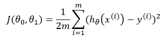
                            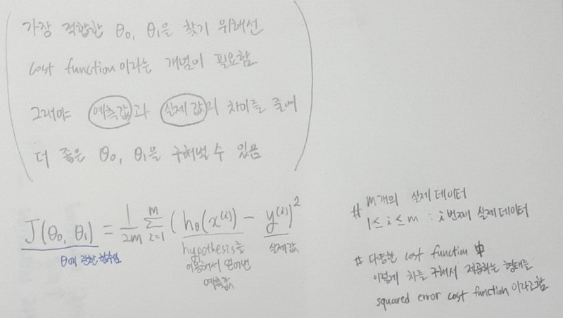
    
                            <br><br><br><br><br>
    
    
                            <h4>step3. cost function 최소화하기 #gradient descent</h4>
                            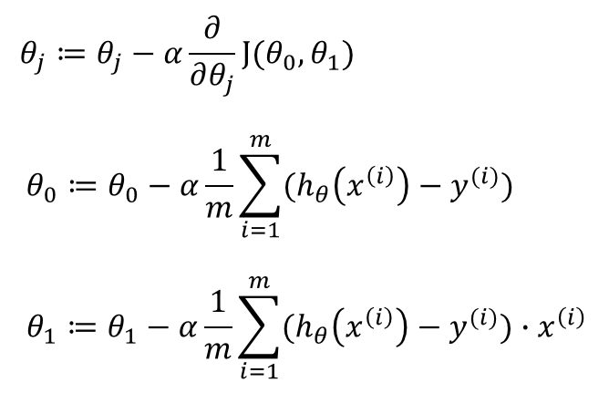
                        </div>
        
        
                        <div>
                            <h3>linear regression with multiple variables</h3>
                            <p>
                                현실은 이렇게 간단하지 않다.
                                변수가 여러개 이다.
                                집값을 결정하는 것은
                                몇 층인지, 평수는 몇 평인지 주변에 편의시설은 몇 개가 있는지에 따라
                                복잡하게 변한다.
                            </p>
    
                            <h4>step1. hypothesis</h4>
                            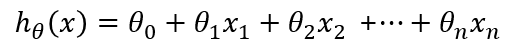
                            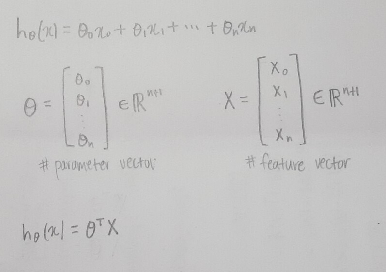
    
    
                            <br><br><br><br><br>
    
                            <h4>step2. cost function</h4>
                            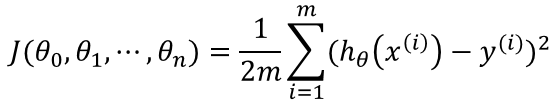
                            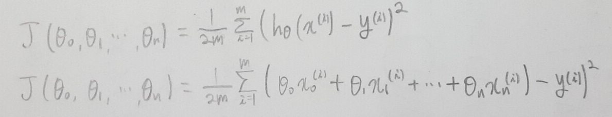
    
                            <br><br><br><br><br><br><br><br><br><br><br><br><br><br><br><br><br><br><br>
    
                            <div style="display: flex;">
                                <div style="border-right: 1px solid black;">
                                    <h4>step3. cost function 최소화하는 1번째 방법 #gradient descent</h4>
                                    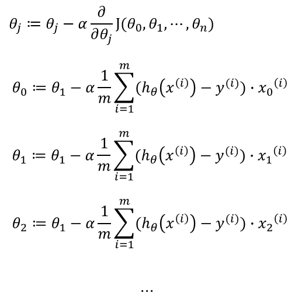
                                    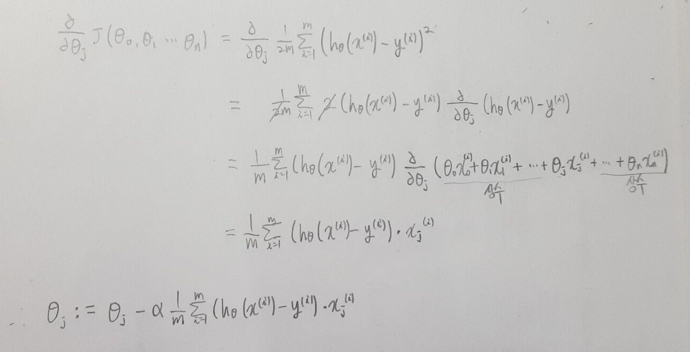
    
                                    <h5>*feature scaling</h5>
                                    <p>
                                        feature가 여러 개 있을 때(multivariate의 경우), 각각의 feaure들 간의 값의 사이즈 자체가 다르면
                                        그 것을 비슷하게 해주는 것이다.
                                    </p>
                                    feature normalization - feature scaling 코드
                                    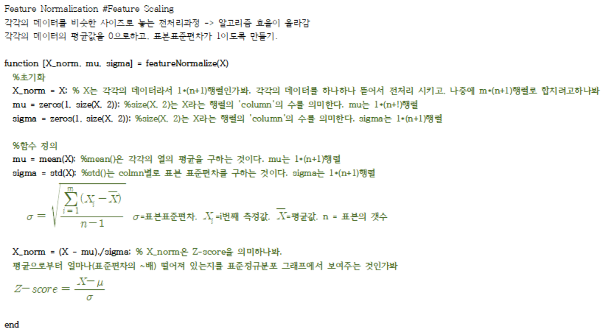
                                </div>
        
                                <div>
                                    <h4>step3. cost function 최소화하는 2번째 방법 #normal equation</h4>
                                    <p>
                                        
                                        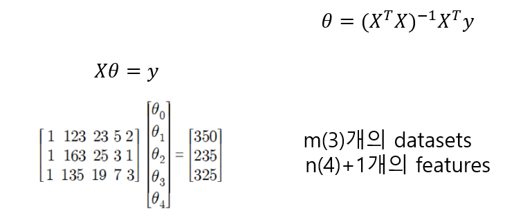
                                    여기서 X를 design matrix라고 부름. 
                                    </p>
                                    <br><br><br><br><br><br><br><br><br><br><br><br><br><br><br><br><br><br><br>
                                    <p>
                                       cf) normal equation에서는 그냥 행렬로 계산하면 되니까 feature scaling이 필요없음.
                                    </p>
                                </div>
                                
                            </div>
                            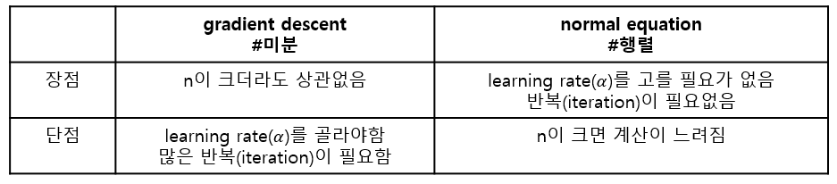
                        </div>
                    </div>
                

                    <h2>1.2 linear regression 코드 at Octave</h2>
                    코드상으로는 어쩌피 행렬로 계산하기 때문에 one variable이나 multiple variables나 똑같음.<br>

                    <button id="button-linear_regression_code-step2_cost_function">step2. linear_regression_code-step1_cost_function</button>
                    <p id="linear_regression_code-step1_cost_function">
                        
                    </p>

                    <button id="button-linear_regression_code-step3_gradient">step3. minimize cost function #gradient descent 코드</button>
                    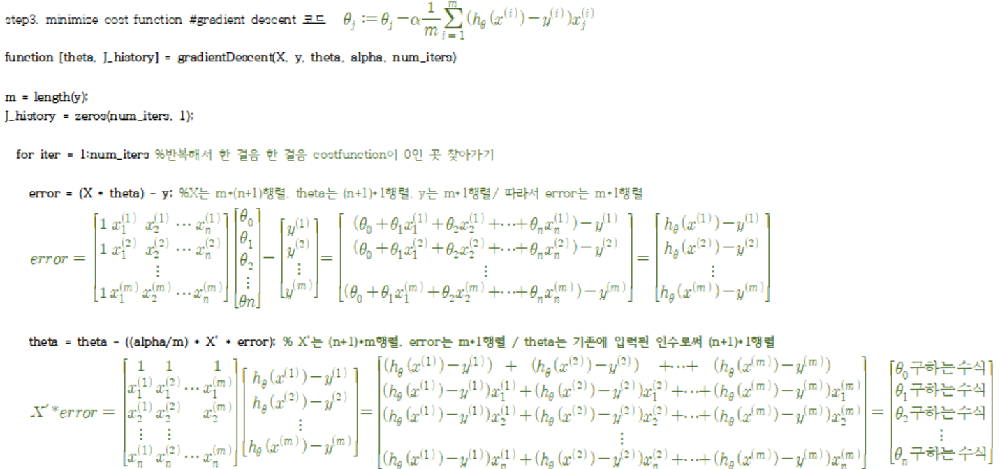
                    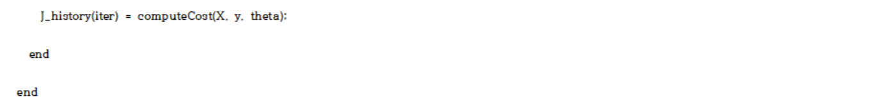
                    <br>
                </div>
                
                <div style="background-color: FFF;">
                    <h2>2. logistic regression</h2>
                    <p>
                        logistic regression도 답이 결정되어 있는 것이다.
                        하지만 답의 형태가 linear regression처럼 수치상으로 결정되는 것이 아니라,
                        답의 형태가 뚝뚝 끊어져서 존재한다.
                        Yes/No형태이거나
                        내일 날씨가 맑음, 흐림, 비 중에 하나이거나
                        물건이 차가운지, 미지근한지, 뜨거운지를 판단하는 것이다.
                        결과값이 끊어져있고, 이런 것들은 우리들이 하는 판단과 맥을 같이한다.
                        그래서 우리는 데이터를 분류해내야 하고
                        그 분류되는 경계선을 나타내는 식을 decision boundary이다.
                    </p>
                    <div style="display: flex;">
                        <div>
                            <h3>logistic regression with one variable</h3>
                            <p>
                                보통 yes/no, True/False 문제가 해당된다.
                                그래서 0일 때 yes, 1일때 no로 귀결되는 함수형태를 이용해야 한다.
                                그래서 linear regression에서 사용되는 함수형태를 쓰기가 어려운 것이다.
                                그래서 liner regression에 사용되는 함수에 sigmoid 또는 logistic이라는 옷을 함수에 씌우는데
                                그러면 함수가 0, 1의 값만 가지도록 모양이 변한다.
                            </p>
                            <div style="display: flex;">
                                <div>
                                    <h4>step1. hypothesis</h4>
                                    <p>
                                        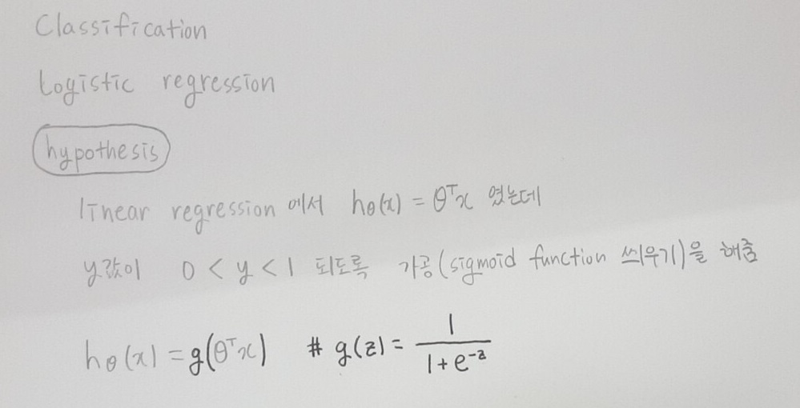
                                    </p>
                                </div>
                                <div>
                                    <h5>*decision boundary</h5>
                                    <p>
                                        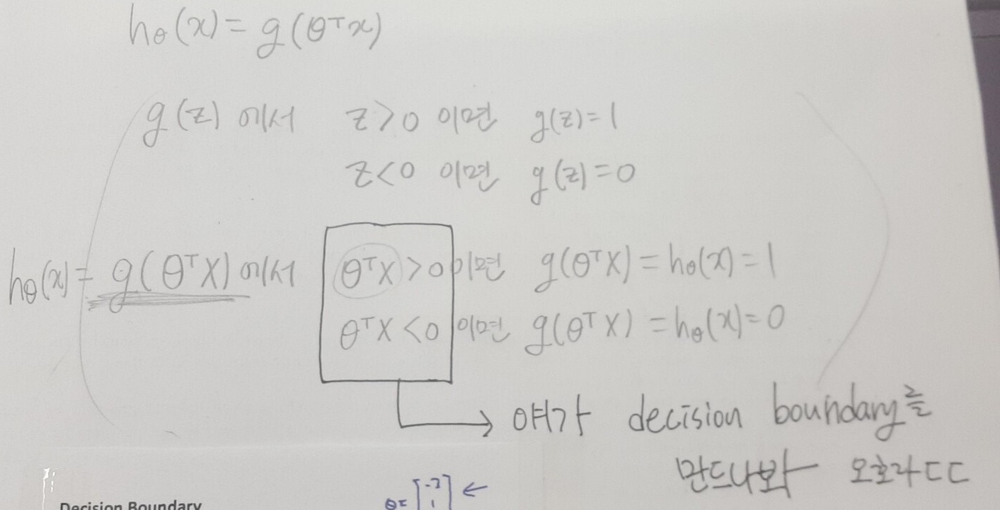
                                        hypothesis에 sigmoid 함수를 이용하니 decision boundary라는 이슈가 생긴다.<br>
                                        g(z)의 z가 0보다 작으면 예측값이 0이고, z가 0보다 크면 예측값이 1이 된다.<br>
                                        그래서 z가 0을 기준으로 부등식이 나타나고, 이것이 특정 boundary를 가진다
                    
                                    </p>
                                </div>
                            </div>
            
                            <h4>step2. cost function</h4>
                            <p> 
                                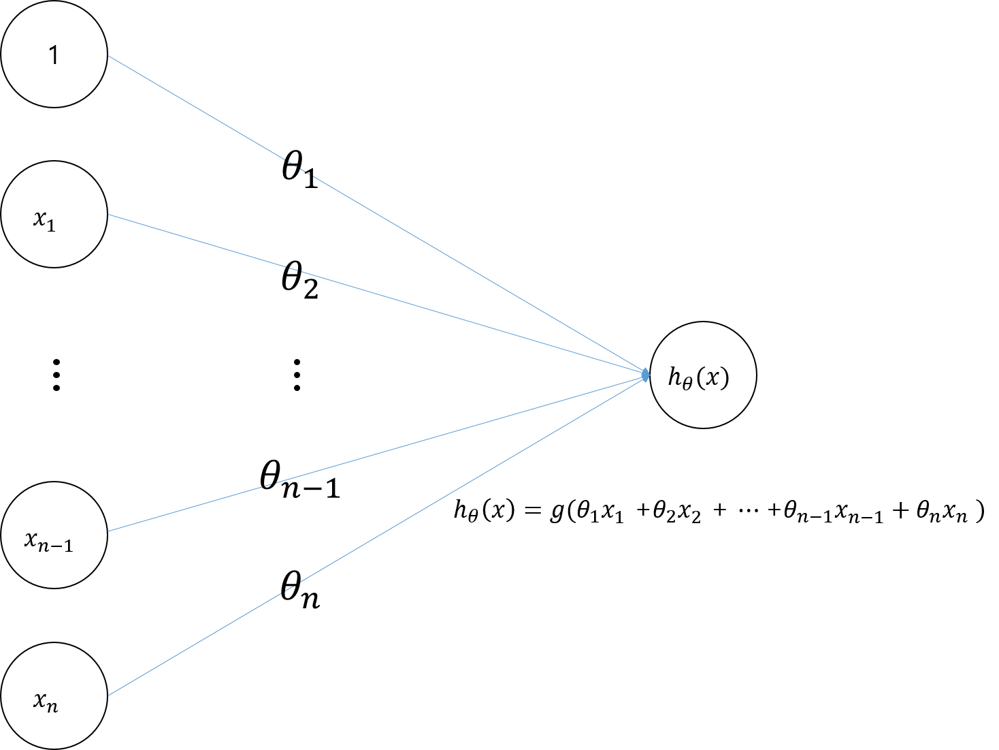

                                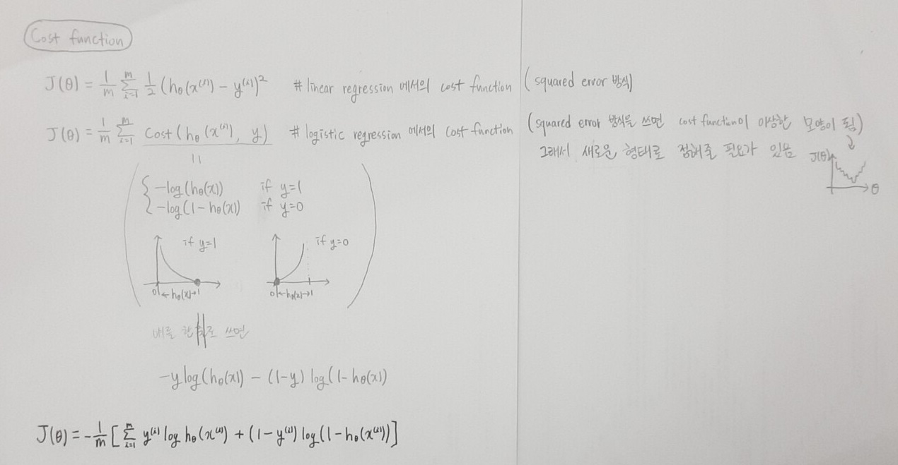
                            </p>
            
                            <h4>step3. minimize cost function</h4>
                            <button id="button-logistic_regression_proof-step3_gradient">logistic regression step3. minimize cost function #gradient descent 증명</button>
                            <div id="logistic_regression_proof-step3_gradient">
                                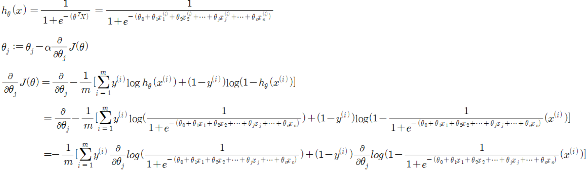
                                <div style="display: flex;">
                                    <div>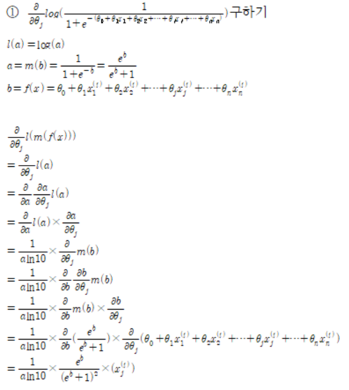</div>
                                    <div>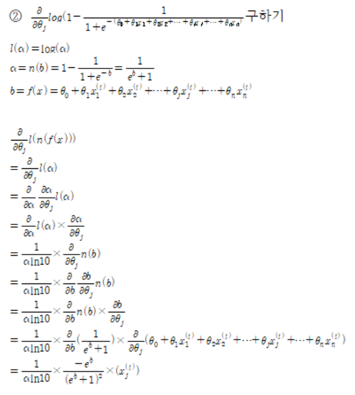</div>
                                </div>
                                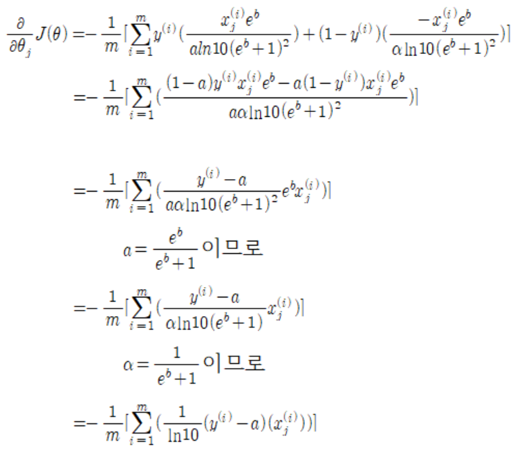
                                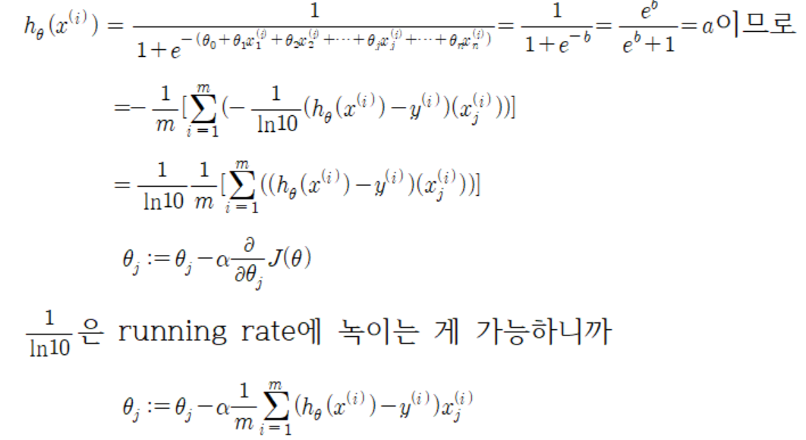
                            </div>
        
                        </div>  
        
                        <div style="width: 500px;">
                            <h3>logistic regression with multiple variables</h3>
                            <p>
                                날씨가 맑음, 흐림, 비, 눈 중 classifiacation을 하던가,<br>
                                미세먼지가 좋음, 나쁨, 매우 나쁨같은 것을 classification하는 것들을
                                multivariate-logistic_regression이라고 한다.
                            </p>
                       
                        </div>
                    </div>
                </div>

                <hr>
                <h2>advanced optimization</h2>
                <p>
                    gradient를 구하는 것 말고도<br>
                    2. Conjugate gradient<br>
                    3. BFGS<br>
                    4. L-BFGS<br>
                    같은 최적화를 더 잘 하는 도구들이 있다.
                </p>

                <hr>

                <h2>*Overfitting이라는 문제</h2>
                <p>
                    overfitting이라는 문제가 생기니, cost function에 Regularization을 해주어서 단순화시키다. 너무 단순화시키면 underfitting되니까 주의해야한다.
                </p>
                <h3>overfitting</h3>
                <p>

                </p>

                <h4>regularization #단순화시키기</h4>
                <p>

                </p>
                <h5>reguralized liner regression</h5>

                <h5>regularized logistic regression</h5>

                <hr>

                <div style="background-color: #f2f2f2;">
                    <h2>3. neural network</h2>
    
                    <p>
                        neural network는 non-linear hypothesis이다.
                    </p>
                    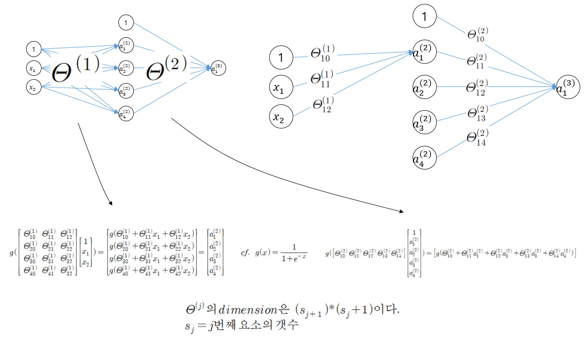
                    <div style="display: flex;">
                        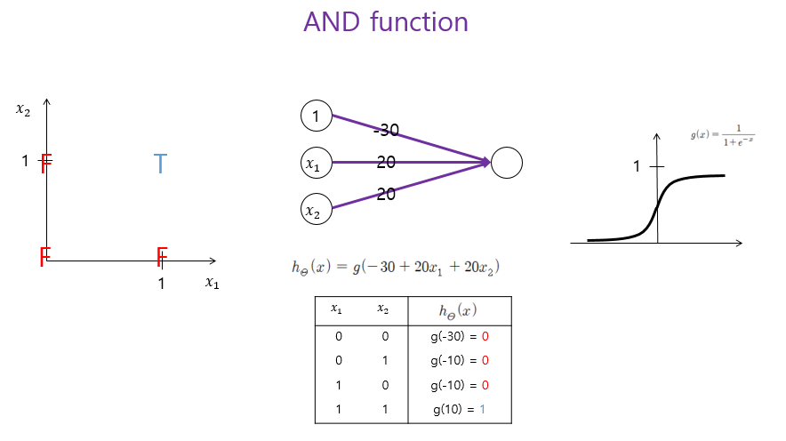
                        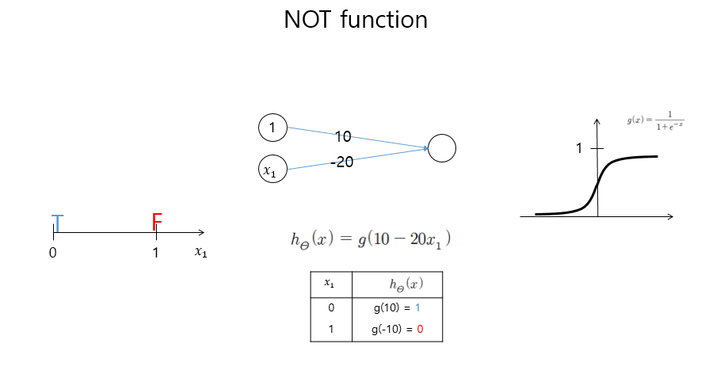
                        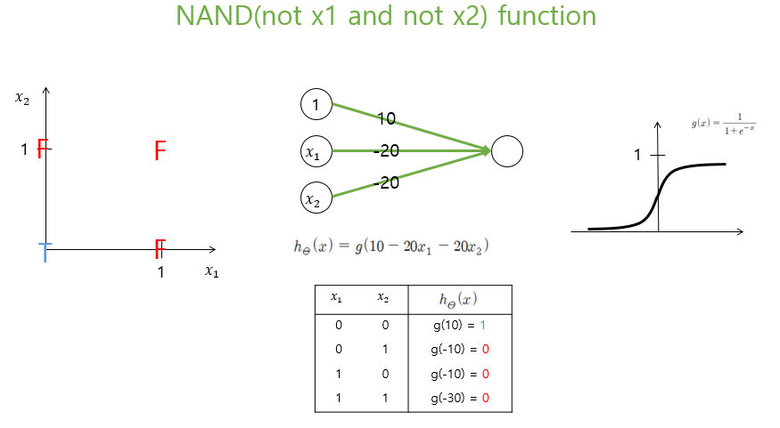
                        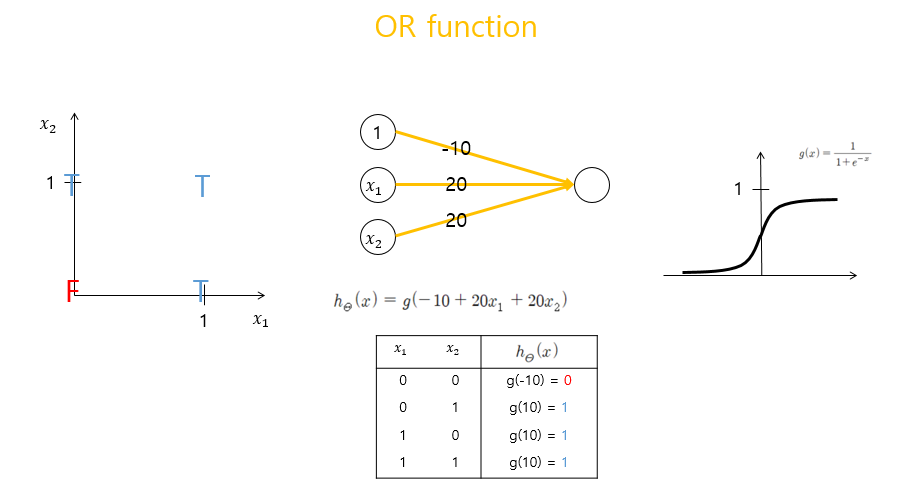
                    </div>
                    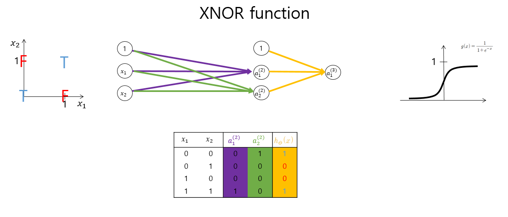
    
                    <div style="display: flex;">
                        <div style="border-right: 1px solid black;">
                            <h3>newral network - binary classification #1개의 output layer</h3>
                            <p>
                                output layer가 1개이다. 걔가 0아니면 1로 판단을 내려주면 되기 때문이다.
                            </p>
            
                            <h4>step1. hypothesis</h4>
            
                            <h4>step2. cost function</h4>
                            <p>
            
                            </p>
            
                            <h4>step3. minimize cost function #backpropagation</h4>
                            <p>
            
                            </p>
                        </div>
        
                        <div>
                            <h3>neural network - multiclass classification #여러 개의 output layer</h3>
                            <p>
                                outputlayer가 판단 갯수이다, 맑음, 흐림, 비, 눈을 분류하는 것이면 output layer가 4개이면 되고, 
                                초급, 중급, 고급을 분류하는 것이면 output layer가 3개이면 된다.
                            </p>
            
                            <h4>step1. hypothesis</h4>
                            <p>
            
                            </p>
            
                            <h4>step2. cost function</h4>
                            <p>
                                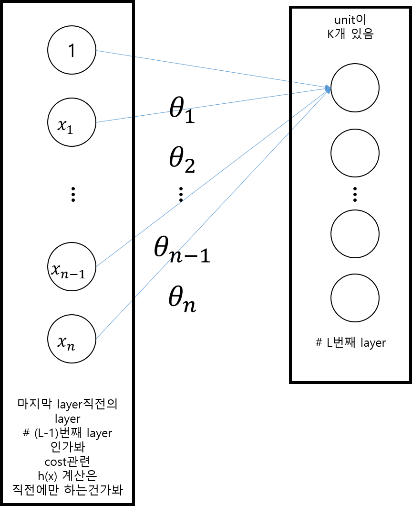
                                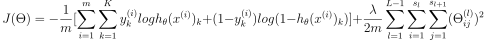
                                regularization term 뜯어보기
                                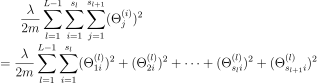
                                <br>
                                
                            </p>
            
                            <h4>step3. minimize cost function #backpropagation</h4>
                            <p>
                                
                                
                            </p>

                        </div>
                    </div>
                </div>


                <h1>Ⅱ. unsupervised learning</h1>
                <p>
                    unsupervised learning에는 답이 없다.
                </p>


                <h1>Ⅲ. reinforcement learning</h1>


                <br><br><br><br><br><br><br><br><br><br><br><br><br><br><br><br><br><br><br><br><br><br><br><br><br><br><br><br><br><br><br><br><br><br><br>
            </main>
            
        </section>
        <footer style="background-color:red;">
            
            참조 : machine learning(andrew ng)<br>
            When \(a \ne 0\), there are two solutions to \(ax^2 + bx + c = 0\) and they are
\(x = {-b \pm \sqrt{b^2-4ac} \over 2a.}\)
\(
\begin{bmatrix}
1 & 2 & 3\\
a & b & c
\end{bmatrix}
\)<br>


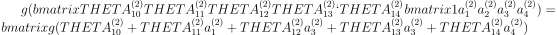

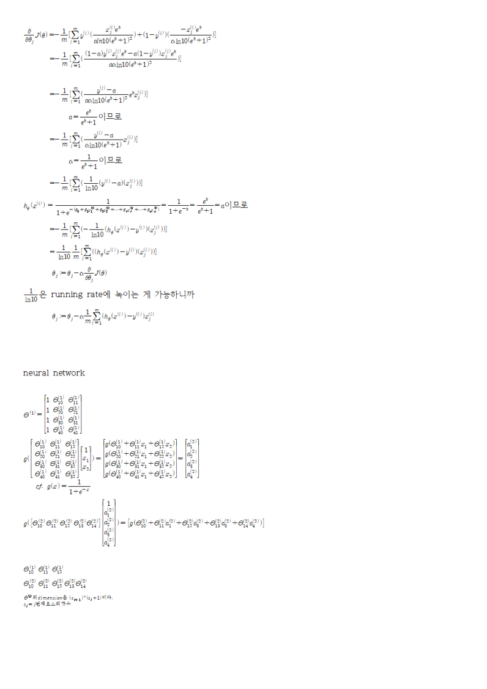
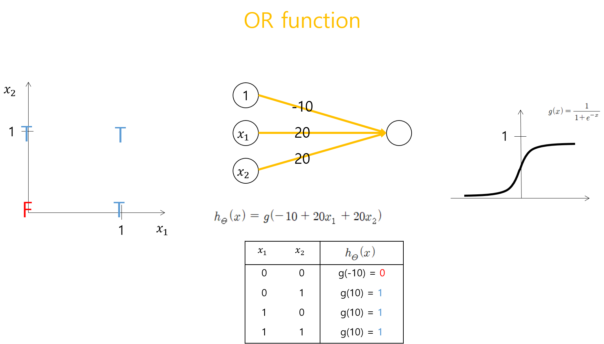


\(J(\Theta )=-\frac{1}{m}[\sum_{i=1}^{m}]\)<br>
\(J(\Theta )=-\frac{1}{m}[\sum_{i=1}^{m}\sum_{k=1}^{K}y_k^{(i)}log\: h_\Theta (x^{(i)})_k+(1-y_k^{(i)})log(1-h_\Theta (x^{(i)})_k)]+\frac{\lambda }{2m}\sum_{l=1}^{L-1}\sum_{i=1}^{s_l}\sum_{j=1}^{s_{l+1}}(\Theta _j^{(l)})^2\)<br>
\[ \definecolor{darkblue}{RGB}{13, 29, 16} \int _{a}^{b} F(t) \,dt = F(b) - F(a) \tag*{$\textcolor{darkblue}{\blacksquare}$} \]<br>
\[ \textcolor{red}{a}x^2 + \textcolor{blue}{b}x + \textcolor{green}{c} = 0 \implies x = \frac{-\textcolor{blue}{b} \pm \sqrt{\textcolor{blue}{b}^2 - 4\textcolor{red}{a}\textcolor{green}{c}}}{2\textcolor{red}{a}} \]

\[ \frac{ \cancel{n} (\bcancel{n+1}) (\xcancel{n+1})} {2 \cancel{n} (\bcancel{n+1}) (\xcancel{n+1})} = \frac{1}{2} \]


        </footer>
    </div>
</body>

</html>